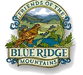

Conservation & Preservation
Protecting Our Mountain
Protecting the environmental health of the Blue Ridge Mountain is one of our primary goals. We work with local organizations to monitor water quality, protect wildlife habitats, and promote sustainable land management.
Our Partners in Stewardship
Piedmont Environmental Council
The Piedmont Environmental Council mission is to promote and protect the natural resources, rural economy, history and beauty of the Virginia Piedmont since 1972.
Visit Website
Friends of the Blue Ridge Mountains
Friends of the Blue Ridge Mountains was founded 13 years ago with the twin objectives of providing its members with information about the unique environment of the Blue Ridge and to be a vehicle through which our members could bring their voice to bear on public policy affecting our mountains.
Visit WebsiteThe Blue Ridge Wildlife Center
The Blue Ridge Wildlife Center is a full-service, wildlife-exclusive teaching hospital that cares for injured, sick, or orphaned native wildlife and teaches the public how to be good stewards of the land around us.
Visit WebsiteBlandy Experimental Farm
The Blandy Experimental Farm increases understanding of the natural environment through research and education.
Visit Website“Thousands of tired, nerve-shaken, over-civilized people are beginning to find out going to the mountains is going home; that wilderness is a necessity.” — John Muir